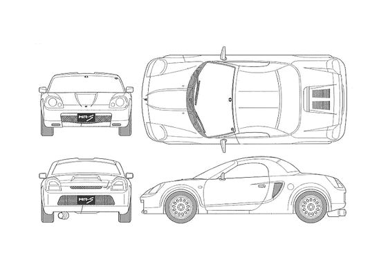

ZZW30 Chassis Weights

Here are some possible weights for a ZZW30
Here are some steps to remove weight:
- Remove front compartment spare tire, tire bucket, and plastic surrounds.
- Remove the passenger seat.
- Consider replacing exhaust components like the header and catalytic converter.
- Consider installing a lightweight battery
- Remove the soft top entirely. You may want to consider getting a carbon hardtop.
- Remove the interior panels, such as the door cards, center console, rear bins, carpet, and dash. For racing purposes, the airbag may also be removed.
- Consider getting coilovers as they are marginally lighter than the OEM suspension